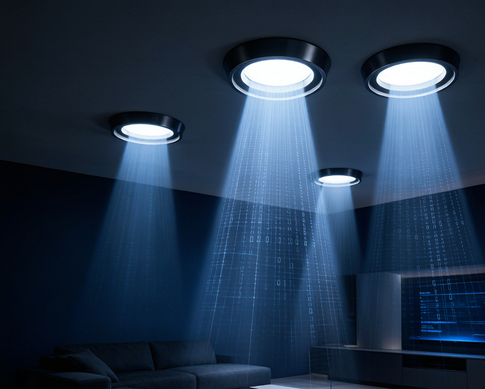

你有没有想过：头顶那盏LED灯，除了照亮房间，还能帮你上网？
这不是科幻。2026年，一项叫Li-Fi（可见光通信，VLC）的技术正在从实验室走向商用——全球市场规模已达48.7亿美元，较2024年增长56.1%。欧盟发布了正式标准ETSI EN 303 913，中国工信部将VLC纳入新型信息基础设施目录，试点项目数量较去年翻了一番。
今天我们就来拆解：灯泡到底怎么上网？Li-Fi和Wi-Fi有什么区别？普通家庭和企业什么时候能用上？
一、LED灯泡怎么传输数据？
原理其实不复杂。LED是半导体发光器件，它的亮度切换速度极快——每秒可以闪烁上百万次，远超人眼感知范围（人眼能感知的极限约60Hz）。
Li-Fi就是利用这个特性，通过控制LED的高频明暗来编码0和1：
| 维度 | Li-Fi（可见光通信） | Wi-Fi（射频通信） |
|---|---|---|
| 传输介质 | 可见光（380-780nm） | 射频电波（2.4/5GHz） |
| 理论速率 | 10 Gbps+ | 1.2-9.6 Gbps |
| 频谱 | 无需授权，无限带宽 | 拥挤，需授权 |
| 穿墙能力 | 不能穿墙 | 可穿1-2堵墙 |
| 电磁干扰 | 零 | 有 |
| 安全性 | 光照即覆盖，关灯即断 | 信号可被截获 |
| 能耗 | 复用照明能耗 | 需独立射频功耗 |
核心优势很明确：频谱免费、带宽巨大、无电磁干扰、天然安全。在射频频谱越来越拥挤的今天，可见光是一块几乎未被开采的"新大陆"。
二、2026年哪些场景已经在用？
Li-Fi不是要取代Wi-Fi，而是在Wi-Fi搞不定的场景里补位。目前商用最成熟的三个方向：
1. 医院手术室——零电磁干扰刚需
手术室里大量精密医疗设备对射频干扰零容忍，Wi-Fi被严格限制。Li-Fi用头顶无影灯传输数据，完全不产生电磁辐射，已在上海瑞金医院等三甲医院试点。医生在手术过程中可以直接通过照明灯获取患者实时监护数据和影像。
2. 矿井与工业防爆环境——安全通信唯一解
煤矿井下严禁射频设备（可能引发瓦斯爆炸），传统通信只能靠有线电话。Li-Fi利用矿灯和巷道照明灯传输数据，天然防爆。2026年中国已有3个大型煤矿试点部署，井下人员定位精度从±15米提升到±0.3米。
3. 室内精准定位——比蓝牙Beacon准10倍
商场、机场、博物馆里，Li-Fi可实现厘米级室内定位。每一盏灯都是一个定位锚点，手机摄像头接收灯光信号即可定位，精度比蓝牙Beacon高一个数量级，且无需部署额外基站。
三、Li-Fi的短板：别急着扔路由器
Li-Fi很美，但也有硬伤：
- 必须可见或有反射光：灯被遮挡就断连，背光坐姿刷手机的场景体验差
- 上行通道弱：目前下行（灯→设备）速度快，上行（设备→灯）还需红外或反射光方案
- 标准化滞后：ETSI EN 303 913刚发布，芯片生态远不如Wi-Fi成熟
- 成本高：一套Li-Fi模组成本约300-500元，远高于Wi-Fi模组的30-50元
所以短期内Li-Fi不会出现在你家的普通灯泡里。它更可能先在医院、矿井、军事等垂直场景落地，然后逐步渗透到高端商业照明。
四、智能照明厂商的机会在哪里？
对于LED照明企业来说，Li-Fi意味着一个价值判断：你的灯不再只是"发光"的硬件，而是"通信+照明"的基础设施。
三个机会方向：
- 驱动电源升级：Li-Fi要求驱动支持高频调制（MHz级开关），传统恒流驱动的纹波和响应速度不够，需要专用可调光驱动方案。涂鸦等IoT平台已在开发VLC兼容的驱动SDK。
- 路灯+通信一体化：智慧城市路灯天然是Li-Fi基站的载体——有电、有灯、有高度、有间距。一个城市10万盏路灯就是10万个通信节点。
- 照明即服务（LaaS）：客户不买灯，买"光照+通信"的服务包。2026年已有超过300个商业地产项目采用按光输出量付费的合同能源管理，照明数据传输是增值服务的新卖点。
五、什么时候能进家庭？
保守估计，2028年前Li-Fi仍以B端商用为主。但有几个信号值得关注：
- 集成化Li-Fi芯片组功耗已降至0.8W以下，2025-2026出货量同比增长63.8%
- 欧盟ETSI标准落地后，芯片厂商有了统一规范，成本将快速下降
- 中国工信部政策推动下，研发投入已增长28.6%
当Li-Fi模组成本降到50元以内、和Zigbee/Wi-Fi做成"三合一"芯片的时候，你家的智能筒灯可能就真的能同时照明和上网了。
在那之前，选智能照明时记得关注一件事：驱动电源是否支持高频调光接口。这是未来升级Li-Fi的硬件基础——现在花20块买个好驱动，将来可能省掉换整灯的成本。
Li-Fi不会让Wi-Fi消失，就像LED没有让白炽灯一夜消失一样。但它打开了一扇门：光不再只是照亮空间，而是连接空间。对于做照明的人来说，这是十年来最大的技术变量。